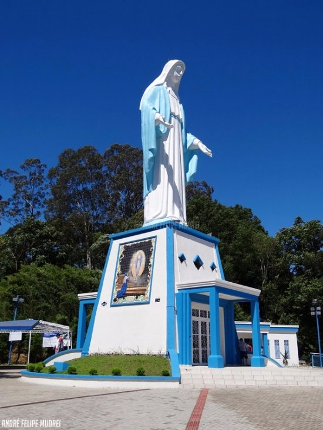

Informações tirados do site da wikipedia de Irati.
Monumento de Nossa Senhora das Graças
O mirante do monumento em homenagem a Nossa Senhora das Graças é um dos pontos turísticos mais visitados no município. A estátua, com 22 metros de altura, é uma das maiores dedicada à Nossa Senhora das Graças.
Começou a ser construída em 1957, em comemoração ao aniversário de 50 anos do município. Nos dias festivos e especiais do calendário católico a capela recebe celebrações, missas e novenas. Além da capela e do mirante, o espaço possui estacionamento, uma escadaria de acesso e um bosque.

Atrativos de interesse cultural
Casa da Cultura - Fundação Edgard e Egas Andrade Gomes;
Museu Casa Dei Nonni;
Casa da Fazenda Florestal;
Parque Aquático de Irati;
Festividades
Romaria e Via Sacra no Distrito de Itapará(quaresma)
Encenação da Paixão de Cristo (quaresma);
Festa Polonesa (1º domingo de maio);
Feira do Kiwi (maio);
Aniversário do Município (julho);
Rodeio de Irati (julho);[1]
Festa de São Cristóvão (julho);
Festa das Nações (agosto);
Deutsches Fest - Baile do Chope e da Linguiça (outubro);